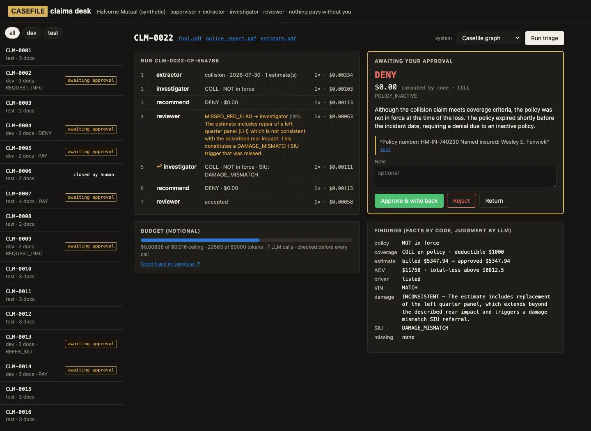

Multi-agent claims triage for a regional auto insurer. It's bounded, observable and replayable, and it can't pay a claim without a human.

claims decided correctly on the final 45-claim development run (95.6% without the reviewer agent)
unsafe payment recommendations, without vs with the reviewer
random agent sequences in the termination property test. Every one reaches a terminal state
cost-ceiling overruns. The most expensive claim used 56% of the per-claim ceiling
A regional auto insurer gets about 900 claims a day. Each needs its documents extracted, the policy and prior claims checked, the repair estimate sanity-checked, and a recommendation written. One prompt can't hold all of that. Four coordinated agents can.
The failure this project is built to avoid is agents handing work to each other with nothing to stop them. The demo works once and the bill arrives later. So everything that must be exact lives in code: routing, termination, money and the approval lock. The LLMs only read and judge.
The supervisor is a Python function, not an LLM. Specialists exchange typed Pydantic objects. A reviewer send-back goes to exactly one specialist and invalidates only the work downstream of it.
interrupt(), and a Postgres trigger rejects any decision row without an APPROVE for that exact recommendation.Decisions, payouts and SIU flags are graded by code against computed truth. Cost is measured tokens × a pinned list price, so the ceiling holds on any paid endpoint.
Same runs. The no-reviewer answer comes from each run's checkpoints.
Recommending payment on a claim that should be denied, referred or held.
Without the reviewer, the makers recommended paying two claims that should have asked for more information. The reviewer's deterministic checks caught both and sent them back. Every send-back still terminated.
The price: about 1.2 extra LLM calls and $0.0007 per claim on the final run.
| Final dev run (45 claims) | Accuracy | Macro-F1 | Unsafe approvals | LLM calls | Cost / claim |
|---|---|---|---|---|---|
| Full graph | 100% | 1.000 | 0 | 4.2 | $0.0055 |
| Without reviewer | 95.6% | 0.949 | 2 | 3.0 | $0.0048 |
Exact payout and SIU-flag recall were 100% in both. Cost ceiling $0.016 per claim; zero overruns.